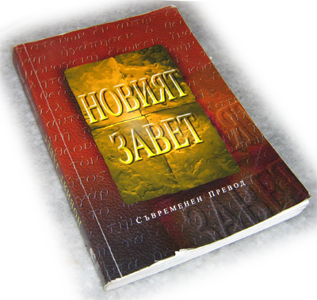

Новият завет - съвременен превод
Copyright © 2000
World Bible Translation Center
www.wbtc.com
Всички права запазени. Може да се цитира и/или препечатва с нетърговски цели в размер на не повече от петдесет (50) стиха без писмено разрешение на World Bible Translation Center, Inc., при условие, че заедно с цитирания материал се изписва следното:
Взето от НОВИЯТ ЗАВЕТ: СЪВРЕМЕНЕН ПРЕВОД © 2000
World Bible Translation Center, Inc. и използвано с разрешение.
В случай на цитиране и/или препечатки с търговски цели и при надвишаване на петдесет (50) стиха е нужно писмено разрешение на World Bible Translation Center, Inc.
ISBN 1-885427-55-7
Предпечатна подготовка: WBTC, Inc.
Отпечатано в България
Електронно представеният в "Компютърна Библия" текст е получен от bibliata.com. За публикуването му като модул в "Компютърна Библия" са информирани български представители на World Bible Translation Center, Inc. и от центъра на компанията нямат претенции за това публикуване.